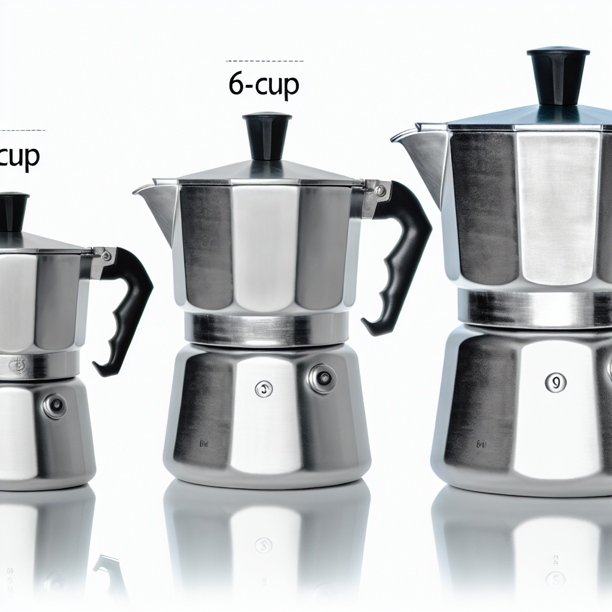

Stap 2: Materiaal kiezen - Aluminium vs Roestvrij Staal
De keuze tussen aluminium en roestvrij staal (RVS) is waarschijnlijk de belangrijkste beslissing bij het kopen van een percolator. Dit materiaal bepaalt niet alleen de aanschafprijs, maar heeft directe invloed op kookplaat compatibiliteit, onderhoudsbehoefte, levensduur en zelfs de smaak van je koffie. Na het intensief testen van meer dan 50 percolators over 8 jaar hebben wij beide materialen grondig kunnen vergelijken in dagelijks gebruik.

Vergelijking percolator maten (3, 6, 9 kops) en materialen (aluminium vs RVS)
Aluminium percolators: de traditionele keuze
Aluminium percolators zijn de oorspronkelijke keuze voor echte koffieliefhebbers en vormen nog steeds de meerderheid van de verkochte modellen. Het materiaal warmt snel en gelijkmatig op, wat zorgt voor een consistente extractie van de koffie. Deze snelle warmtegeleiding betekent dat je koffie sneller klaar is en minder energie verbruikt tijdens het zetten.
Het gewichtsvoordeel van aluminium is aanzienlijk: een 6-kops aluminium percolator weegt gemiddeld 40% minder dan een vergelijkbaar RVS model. Dit maakt aluminium percolators ideaal voor dagelijks gebruik, camping of als je de percolator regelmatig moet verplaatsen. Voor ouderen of mensen met gewrichtsproblemen kan dit gewichtsverschil doorslaggevend zijn.
Het prijsvoordeel is niet te onderschatten. Voor 25-45 euro heb je al een kwalitatief aluminium model zoals de Bialetti Fiammetta, terwijl vergelijkbare RVS modellen vaak het dubbele kosten. Deze toegankelijke prijs maakt aluminium percolators perfect voor beginners die willen experimenteren met Italiaanse koffie zonder grote investering.
RVS percolators: moderne duurzaamheid
Roestvrij staal (RVS) percolators zijn de moderne evolutie van het klassieke ontwerp. Het belangrijkste voordeel is de universele compatibiliteit: RVS werkt op alle kookplaten, inclusief inductie. Met de groeiende populariteit van inductiekookplaten in Nederlandse keukens wordt dit steeds belangrijker. Ongeveer 60% van de nieuwe keukens heeft tegenwoordig inductie.
De duurzaamheid van RVS is superieur. Waar aluminium na jaren intensief gebruik tekenen van slijtage kan vertonen, behouden RVS percolators hun uitstraling en functionaliteit decennialang. Ze zijn bestand tegen krassen, deuken en verkleuring. Voor gezinnen die dagelijks meerdere keren koffie zetten, is deze duurzaamheid een belangrijke overweging.
Het onderhoud van RVS is eenvoudiger en veelzijdiger. Hoewel we nog steeds afraden om percolators in de vaatwasser te doen, zijn RVS modellen wel beter bestand tegen occasioneel gebruik van mild afwasmiddel. Ze zijn ook minder gevoelig voor kalkaanslag en behouden hun glans langer.
De moderne uitstraling van RVS past perfect in hedendaagse keukens. Modellen zoals de Bialetti Venus of Grosche Milano hebben een tijdloze elegantie die zowel functioneel als decoratief is. Voor koffieliefhebbers die waarde hechten aan design en esthetiek, biedt RVS meer mogelijkheden.
Vergelijking in de praktijk
Na 8 jaar testen kunnen we stellen dat beide materialen uitstekende koffie produceren. Het smaaksverschil is minimaal en vooral merkbaar voor zeer ervaren proevers. Aluminium geeft mogelijk iets meer 'body' aan de koffie door de snellere warmteoverdracht, terwijl RVS een iets 'schonere' smaak kan produceren.
De levensduur verschilt wel significant. Onze oudste aluminium testmodellen (uit 2017) vertonen na duizenden kopjes koffie lichte verkleuring en kleine putjes, maar functioneren nog perfect. De RVS modellen zien er nog uit als nieuw.
Voor dagelijks gebruik raden we aluminium aan voor gas- en elektrische kookplaten, en RVS voor inductie en moderne keukens waar design belangrijk is.
Aluminium
✓ Voordelen
- Lichter gewicht (300-400g)
- Snellere opwarming
- Traditioneel en authentiek
- Goedkoper (€25-50)
- Betere warmtegeleiding
✗ Nadelen
- Niet geschikt voor inductie
- Kan verkleuren door koffie
- Gevoeliger voor krassen
- Vereist meer zorgvuldig onderhoud
Roestvrij Staal (RVS)
✓ Voordelen
- Inductiegeschikt
- Duurzamer en krasbestendiger
- Hygiënischer
- Moderne uitstraling
- Makkelijker schoon te maken
✗ Nadelen
- Zwaarder (500-700g)
- Langere opwarmtijd
- Duurder (€40-80)
- Minder traditioneel
🎯 Onze aanbeveling
Kies aluminium als: Je een traditionele ervaring wilt, geen inductiekookplaat hebt, en budget belangrijk is.
Kies RVS als: Je een inductiekookplaat hebt, gemak van onderhoud waardeert, of een moderne uitstraling prefereert.